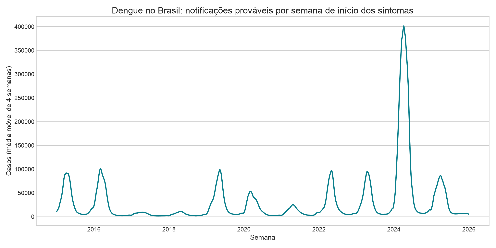
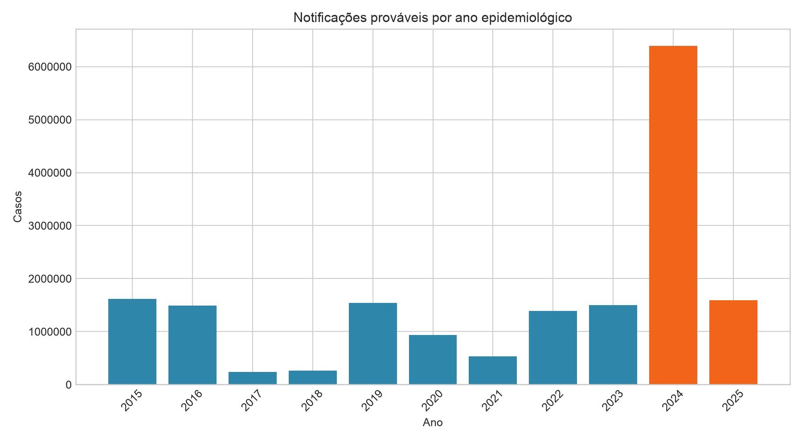
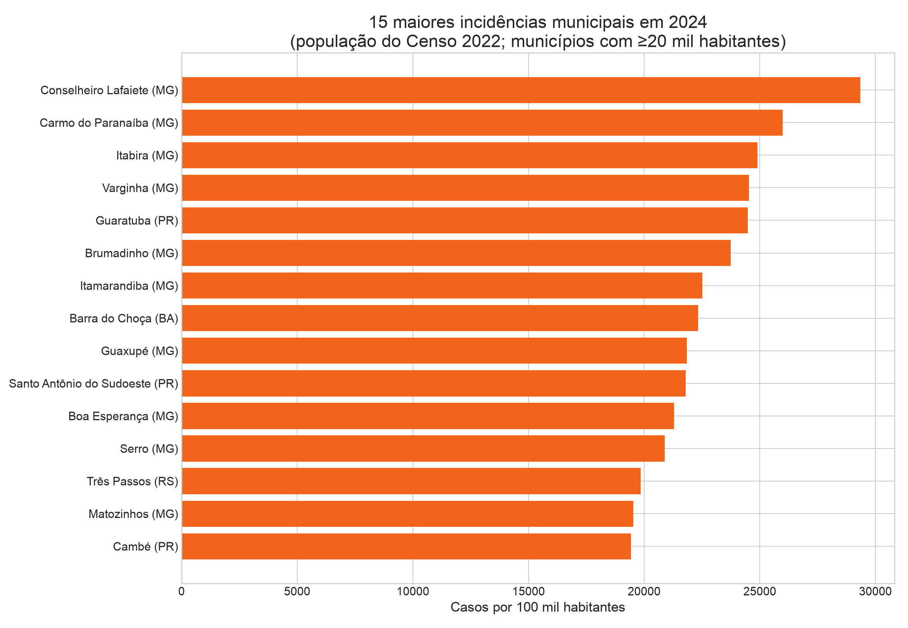
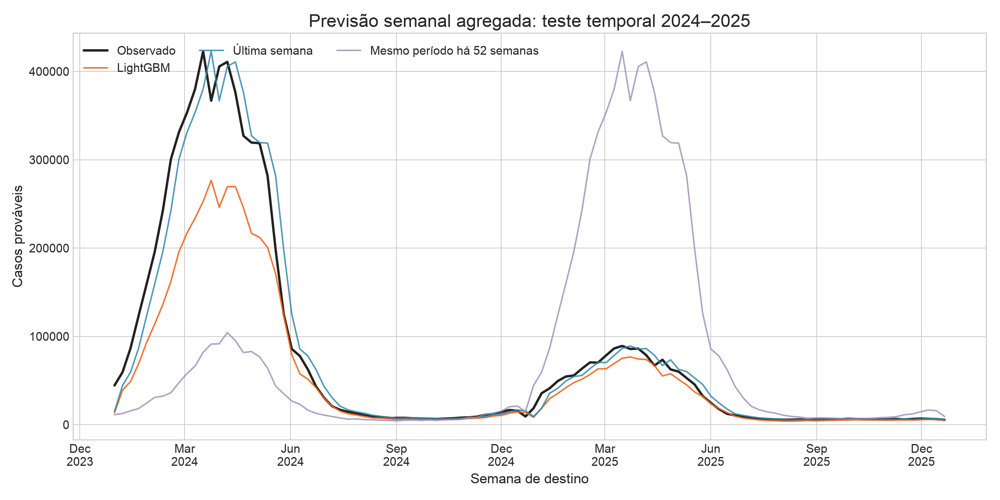
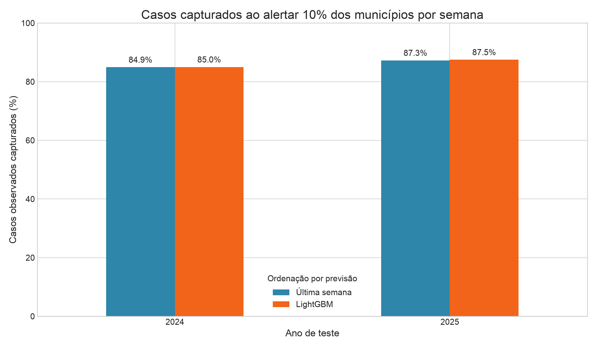
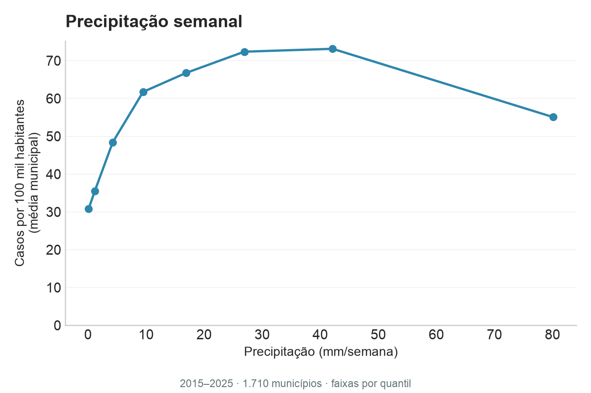
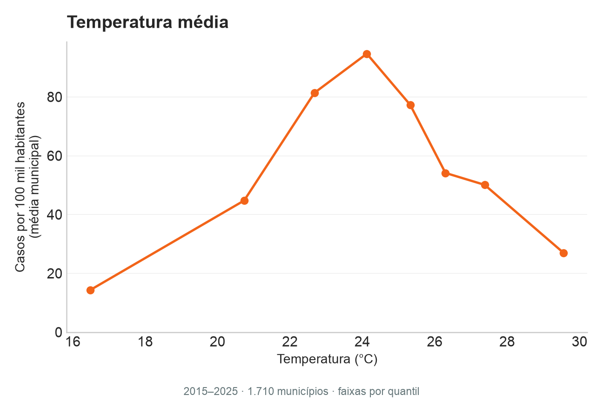
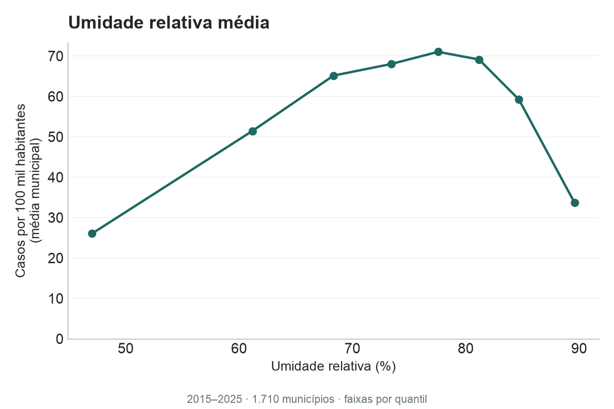

DENGUE · BRASIL · 2015—2025
Um surto muda
toda a escala.
Em 2024, notificações prováveis chegaram a 6,39 milhões. Testamos se dados históricos ajudam a estimar a semana seguinte.
Explorar a série
01 / VOLUME
Onze anos em
quatro números.

02 / DISTRIBUIÇÃO
O impacto também
é territorial.
Incidência municipal em 2024, comparada usando a população do Censo 2022. O recorte inclui municípios com pelo menos 20 mil habitantes.
A população é denominador fixo. Leia como comparação de referência, não como estimativa demográfica anual.

03 / TESTE TEMPORAL
Mais complexidade
não trouxe ganho.
Modelos com clima NASA POWER e vizinhança foram comparados com referências simples no teste de 2024–2025. Menor WAPE indica menor erro relativo ao volume total.

| Modelo | 2024 | 2025 |
|---|---|---|
| Persistência | 26,1% | 31,3% |
| Random Forest | 41,1% | 33,3% |
| LightGBM base | 44,0% | 34,5% |
| LightGBM clima + espacial | 44,0% | 34,1% |
| LightGBM Poisson | Instável | Instável |
| Sazonal · 52 sem. | 95,6% | 380,4% |
↗ Persistência teve menor erro nos dois anos. Clima e vizinhança quase não alteraram o WAPE do LightGBM em 2024 (+0,1 p.p.) e melhoraram 0,4 p.p. em 2025; nenhum modelo venceu a persistência.
PRIORIZAÇÃO
Captura de casos nos 10% de municípios priorizados

04 / CLIMA E DENGUE
Uma semana de clima,
quatro semanas de casos.
Cada faixa compara o clima semanal da NASA POWER à incidência média de dengue nas quatro semanas seguintes, no mesmo município. Recorte: população a partir de 20 mil habitantes e Censo 2022.



NASA POWER/MERRA-2 estima o clima em uma grade, não em cada município. Os padrões são exploratórios e podem refletir sazonalidade e diferenças regionais; não demonstram causalidade.
05 / LEITURA RESPONSÁVEL
Um estudo para
orientar perguntas.
Previsão semanal por município, com treino até 2023 e teste temporal em 2024–2025. Casos prováveis do SINAN foram agregados pela data de início dos sintomas e município de residência.
Clima semanal da NASA POWER / MERRA-2: precipitação, temperatura e umidade. Cobertura em 5.559 dos 5.571 códigos de referência; um não tem geometria IBGE e 11 não têm série associada à grade. Documentação da API NASA POWER.
Dados retrospectivos podem incluir atrasos e revisões. O Espírito Santo foi excluído desde 2020 por mudança no sistema de registro. Resultado exploratório: não é ferramenta de alerta em produção nem de decisão clínica.
Ler relatório completo